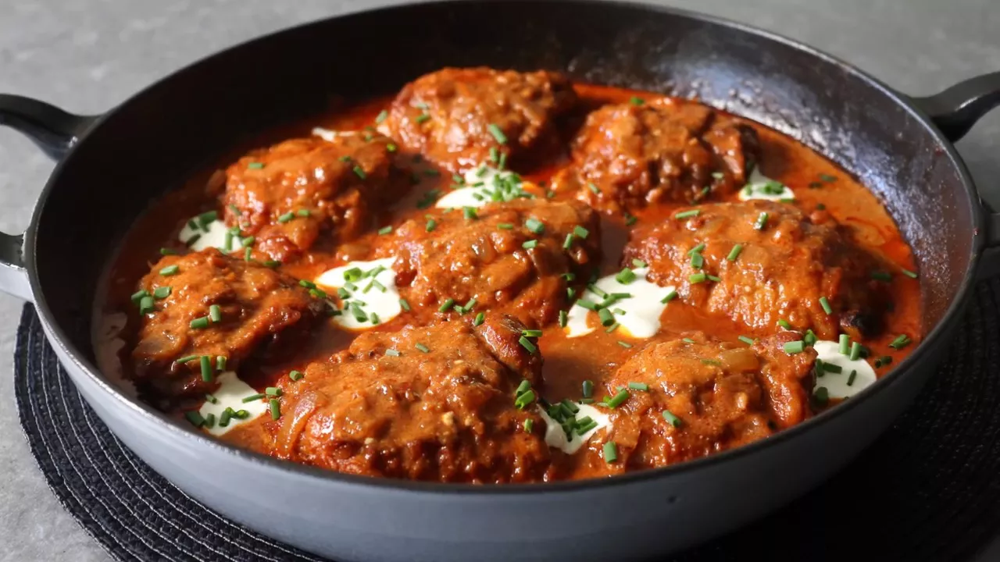

Chicken Paprikash

- Prep Time
- 20 Minutes (or faster but I'm a slow prepper lol)
- Cook Time
- 1 hour, 25 minutes
- Total Time
- 1 hour, 45 minutes
- Servings
- 8 servings
Chicken paprikash is a traditional Hungarian dish made with chicken, onions, and paprika, often cooked in a creamy sauce with sour cream. It's flavorful and comforting, typically served with dumplings or noodles. I'm going to be using Chef John's recipe. He's a cooking Youtuber, one of the OGs, and if you don't watch his videos and are a cook of any skill level looking for more recipes to try, he's worth following. His channel is Food Wishes.
Ingredients
- 8 bone-in, skin-on chicken thighs
- salt to taste
- 2 tablespoons olive oil
- 2 medium yellow onions, diced
- 3 cloves garlic, minced
- 2 tablespoons tomato paste
- 4 teaspoons all-purpose flour
- 1 teaspoon kosher salt, or to taste
- ½ teaspoon freshly ground black pepper
- 1 teaspoon smoked paprika
- ¼ cup sweet Hungarian paprika
- 1 pinch cayenne pepper
- 2 cups chicken broth
- ⅔ cup sour cream, room temperature
- ¼ cup heavy whipping cream
Directions
- Step 1
- Season chicken generously on both sides with salt. Heat olive oil in a heavy, deep-sided pan (that comes with a lid) over high heat and brown the chicken well, skin-side down, about 5 minutes; flip and continue to sear until other side is browned, 3 to 4 minutes more. Turn off heat. Transfer the browned chicken to a plate and reserve until needed; spoon out excess chicken fat if desired.
- Step 2
- Add onions and a pinch of salt to the same pan and saute over medium until golden, about 5 minutes. Add garlic, tomato paste, and flour and cook, stirring, another 3 to 4 minutes to form a tomato roux. Stir in 1 teaspoon kosher salt, freshly ground black pepper, smoked paprika, and sweet paprika and cook for 1 minute. Add chicken broth and bring to a simmer over high heat.
- Step 3
- Reduce heat to medium-low and transfer chicken and accumulated juices back into the pan. Baste the tops with the sauce, cover the pan with the lid, and simmer, basting occasionally with the sauce, until the chicken is no longer pink in the centers and is fork-tender, 45 to 60 minutes. Remove the chicken and transfer to a plate.
- Step 4
- Skim some fat off the top of the sauce if desired. Whisk heavy cream and sour cream into the sauce and bring to a simmer, stirring occasionally. Transfer the chicken and any juices back into the sauce. Simmer, uncovered, basting often, until chicken is heated through and very tender, about 10 minutes. Taste and adjust seasoning if needed.